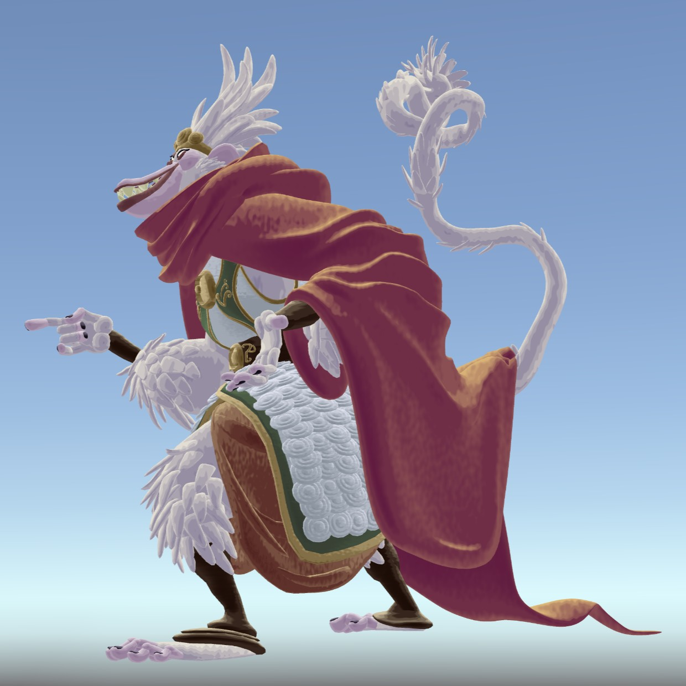
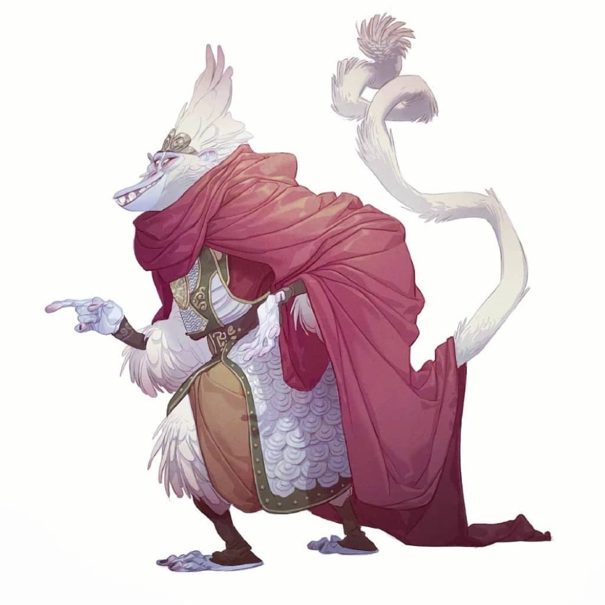
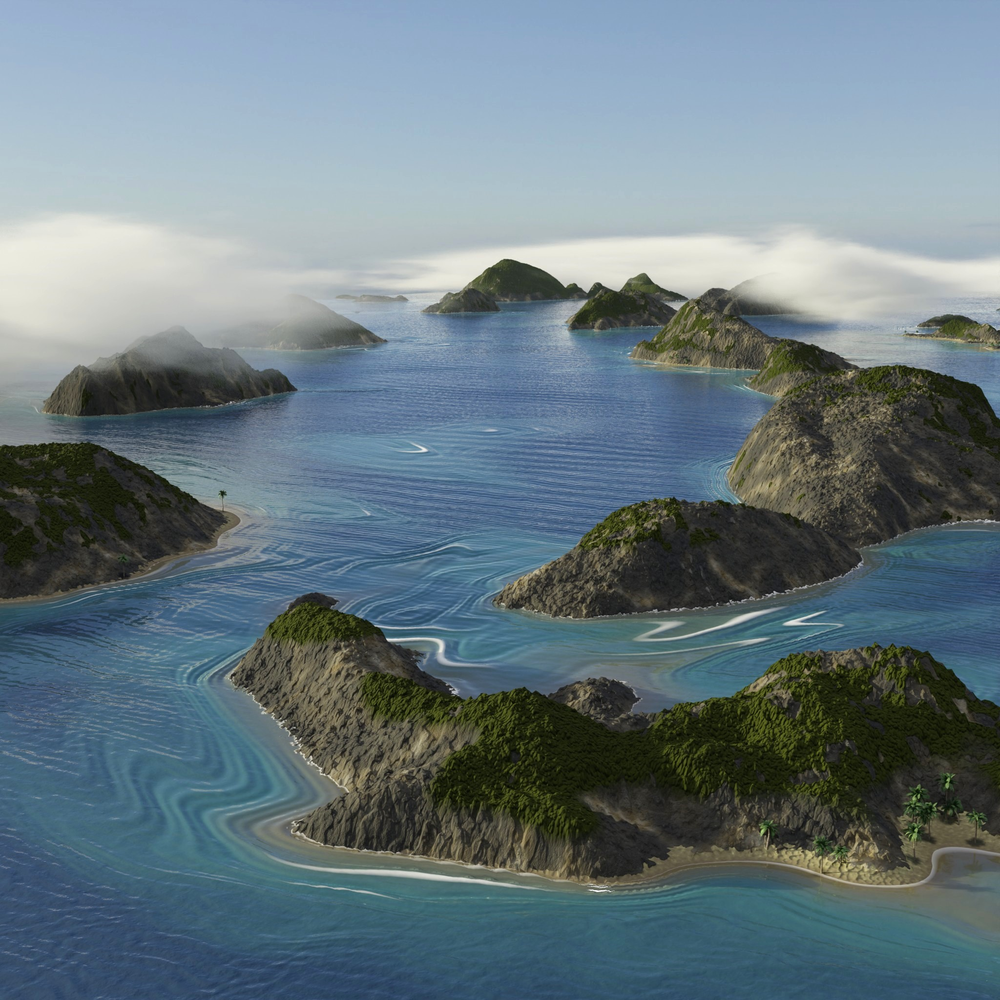
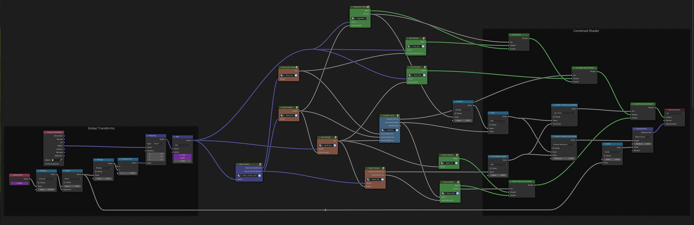
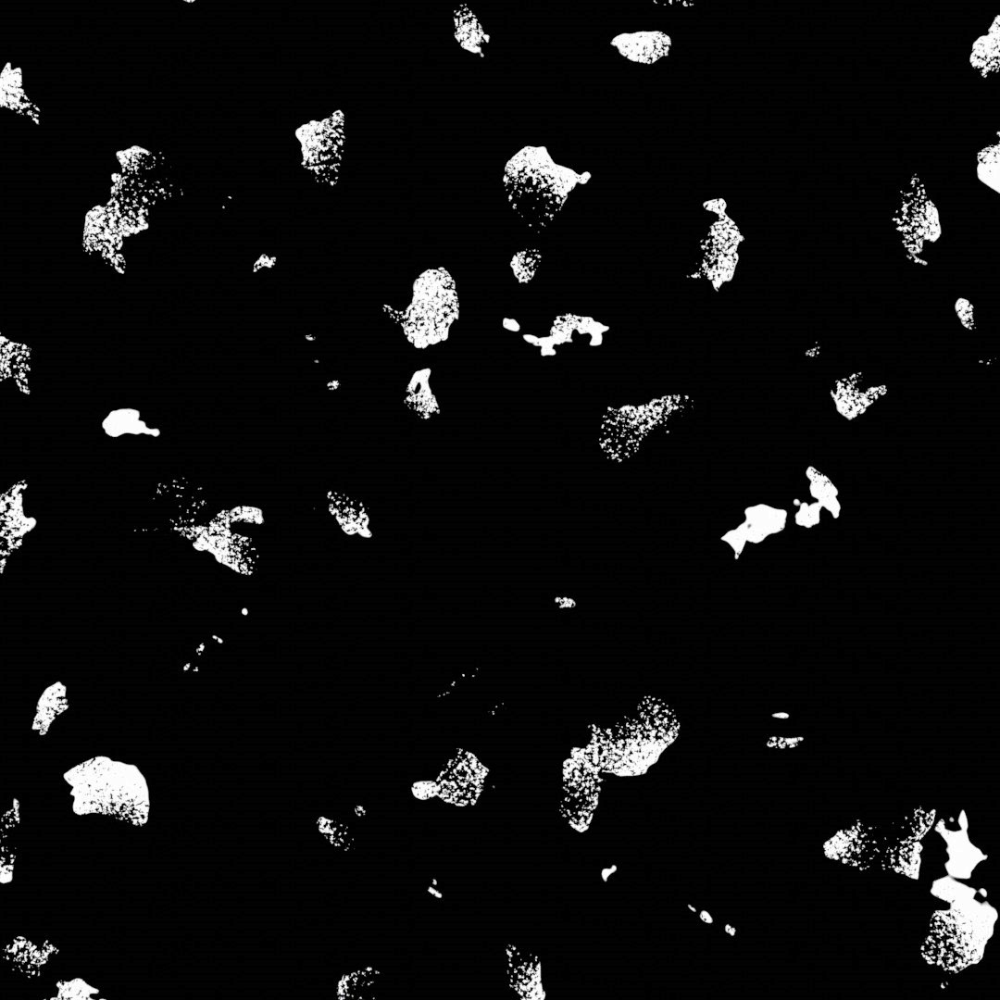
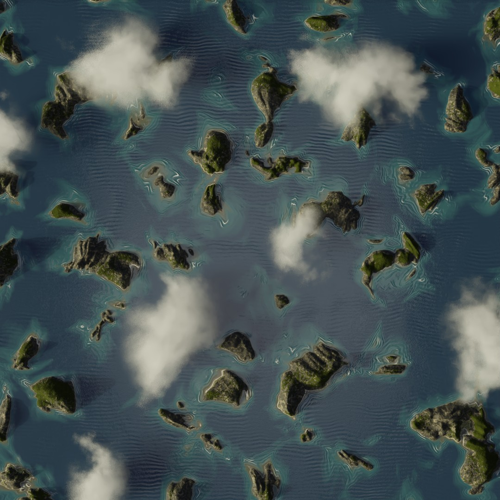
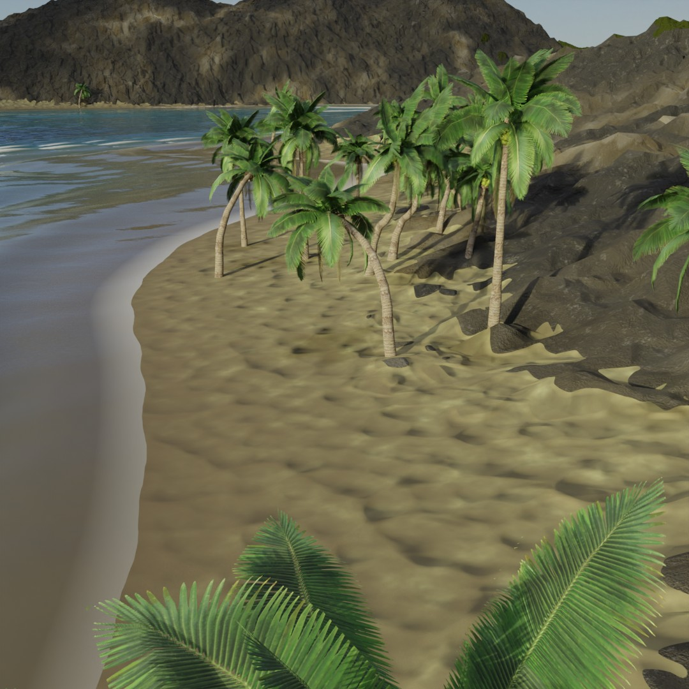
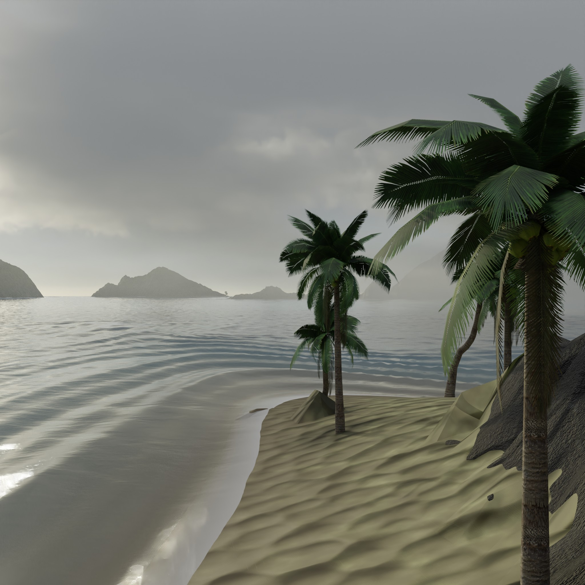
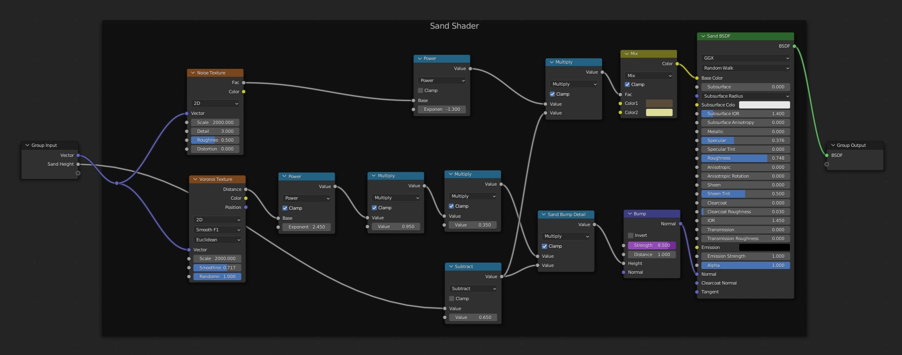

Shaders!
Real-Time Shaders in Unity


Painterly toon shader applied to a sculpt by @riodrawing, based on concept art by @raulmorenocoslado.
Metallic, Voronoi noise-based HLSL shader created for Unity. All lighting and surface detail is procedurally generated and can be applied to any UV-mapped mesh.
Procedural Island Shader in Blender
Shader and geometry nodes capturing the islands of the Philippines -- in particular, the contrast between their inviting beaches and jagged peaks. The colored nodes in the my shader, shown above, each contain subnetworks of their own that describe how to power displacement maps and material attributes using fully procedural textures like Voronoi and Perlin noise. We get the complete island shader by carefully layering all of these generated textures!




The island height map and vegetation masks are based on a warped Voronoi texture. The water material mixes together unidirectional deep water waves with shallow-water waves that use the water's depth as input to the sine function. As seen in my demo, the phase of the waves can be animated to create the appearance of wave crashing ashore!
I used another Voronoi texture to create the cell-like pattern of inverted bumps for the sand material. This high-frequency bump texture powers the normals of the surface rather than vertex displacement. The palm trees were acquired from Blender Market and scattered on the beaches using geometry nodes, and I created the clouds using 4D Perlin noise and principled volume shaders.


